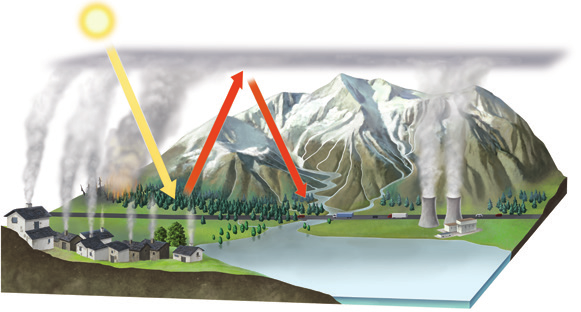
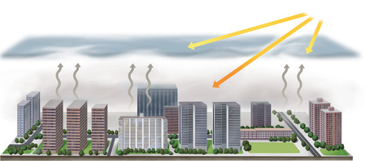

Disminución del espesor de la capa de ozono
La destrucción del ozono estratosférico ocasiona la disminución del espesor de la capa de ozono, con lo que se reduce también su protección frente a las radiaciones ultravioletas.
- Los gases CFC que se emiten a la troposfera ascienden hasta la estratosfera, donde reaccionan con el ozono y lo destruyen.
- La pérdida del ozono estratosférico permite el paso de los rayos ultravioletas hasta la superficie terrestre.
- Las radiaciones ultravioletas pueden ocasionar lesiones oculares y cáncer de piel en los animales, así como la disminución de las poblaciones de plancton.
Aumento del efecto invernadero
El efecto invernadero es un fenómeno natural que evita el enfriamiento de la superficie de la Tierra. Sin embargo, el uso de combustibles fósiles ha contribuido al aumento del efecto invernadero, que es la causa del cambio climático.
- La quema de bosques, la actividad industrial y el uso de vehículos con motor de combustión emiten a la atmósfera gases que intensifican el efecto invernadero.
- Los rayos solares calientan la superficie de la Tierra, que emite radiación infrarroja que es retenida por la atmósfera.
- La retención de las radiaciones infrarrojas ocasiona el aumento de la temperatura media de la superficie de la Tierra.
Consecuencias del cambio climático
- Deshielo de los casquetes polares.
- Ascenso del nivel del mar, que acabará sumergiendo algunas islas y regiones costeras.
- Aumento de la frecuencia y la magnitud de tifones y huracanes.
- Extensión de las regiones con las características climáticas del desierto.
- Destrucción de los hábitats de muchas especies, que dará lugar a la extinción de estas.
Acciones frente a la contaminación
- Acciones colectivas: Son las promovidas por gobiernos e instituciones, a través de acuerdos internacionales y campañas de concienciación dirigidas a reducir las emisiones contaminantes.
- Acciones individuales: Son las que podemos realizar en nuestra vida cotidiana, como clasificar y reciclar los residuos, ahorrar energía y consumir productos poco contaminantes.

